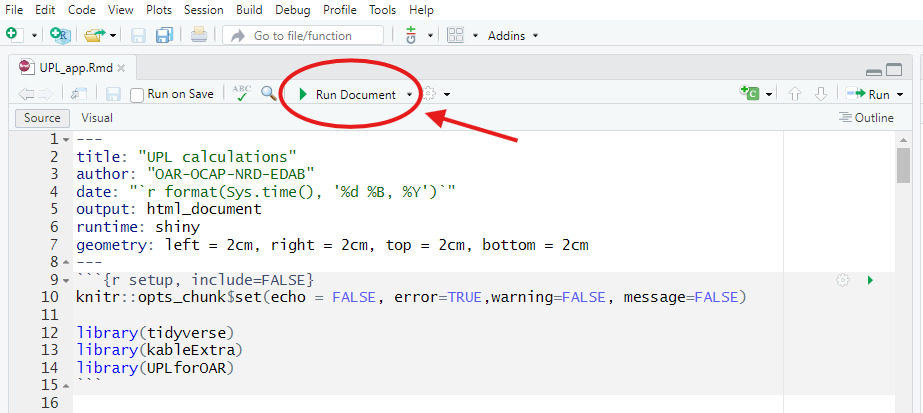
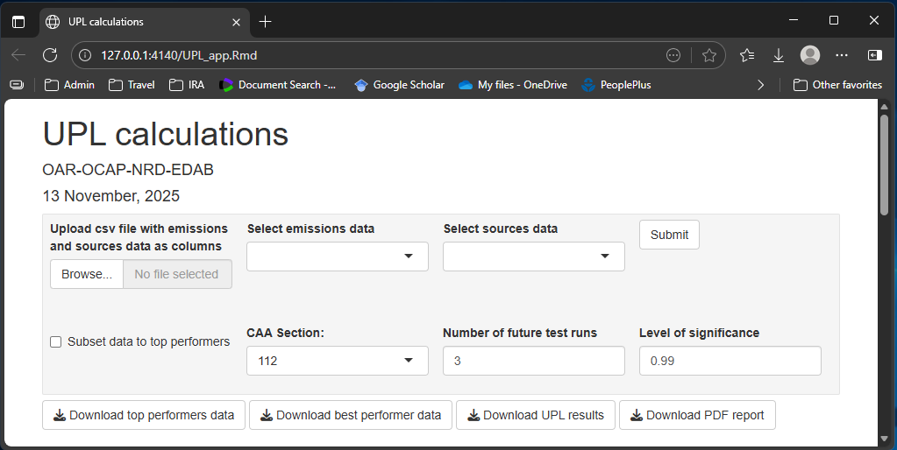
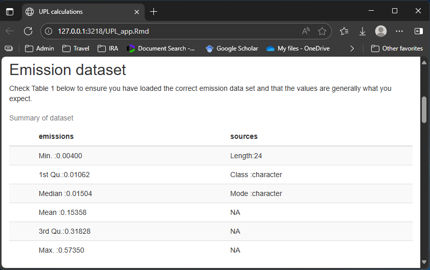
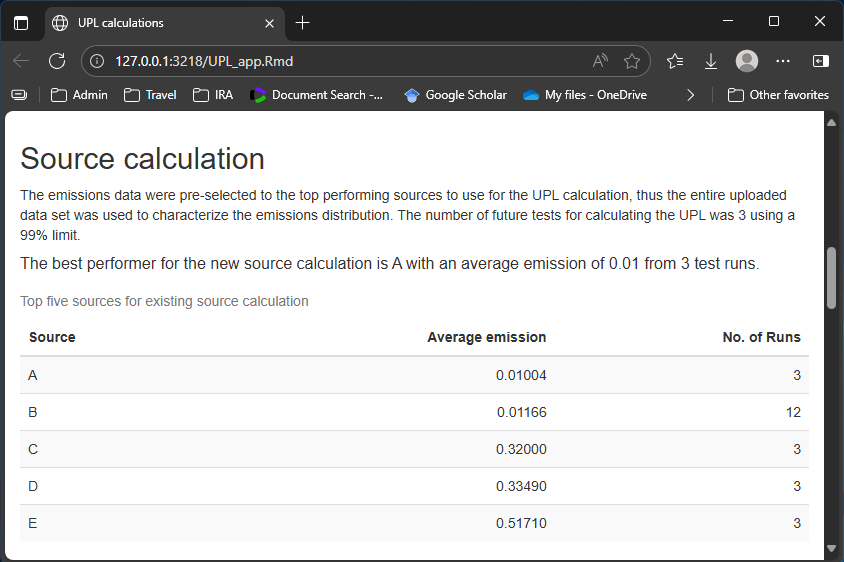
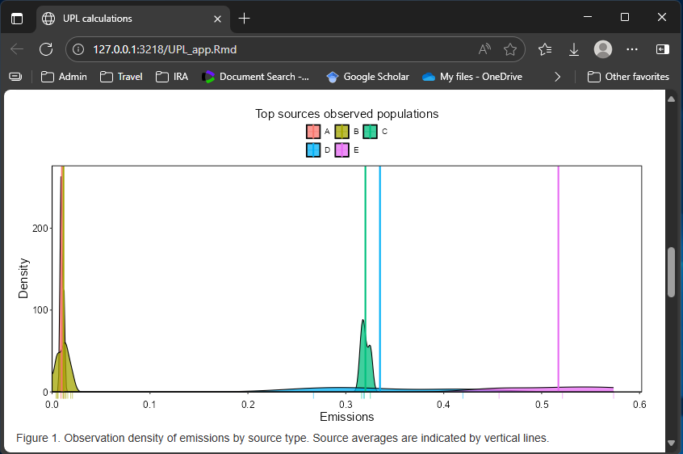
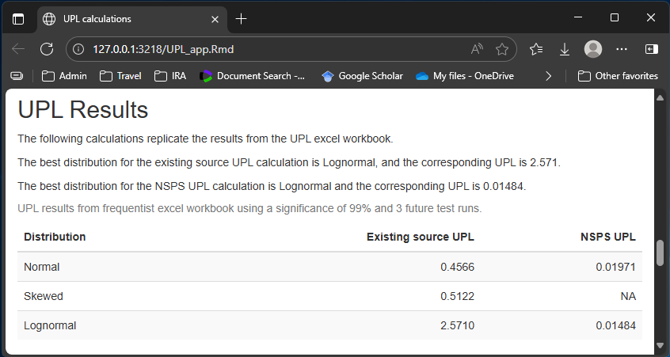
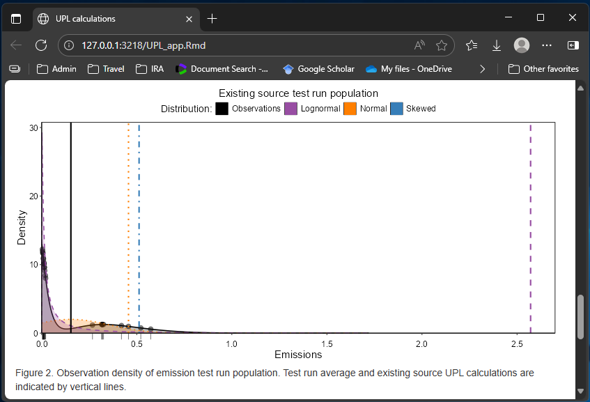
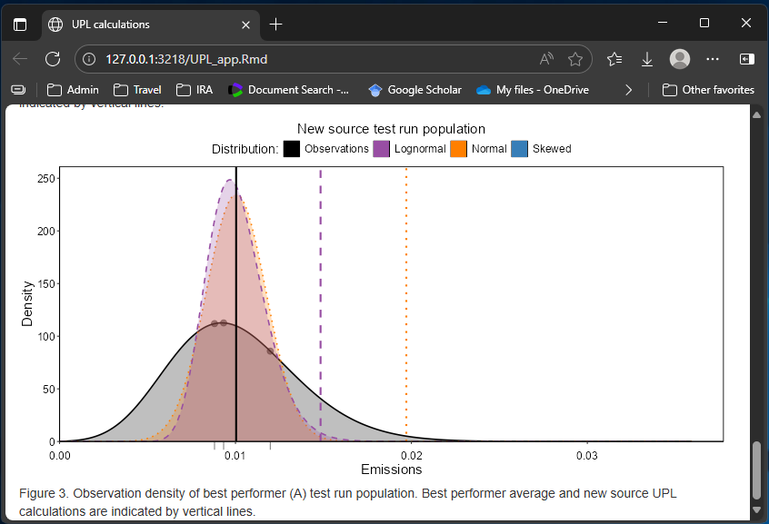
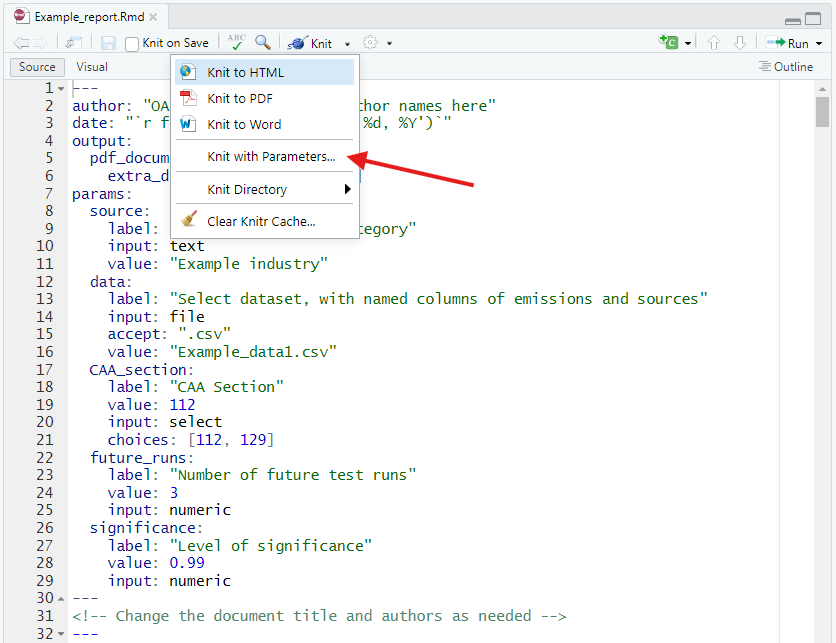

Introduction
This article is meant as a quick guide to using the shiny app and
templates accompanying the UPLforOAR package. Rmarkdown
files for the shiny app and all templates are located in the
inst folder in the package directory. It will be easier to
access these by downloading directly from github.
Make sure to keep the shiny app UPL_app.Rmd in the same location as the
templates
folder with its contents included, since the shiny app and report
templates use relative paths to find each other. You will need LaTex or
MikTex (for Windows) installed in order to generate PDF documents from
the app report or other example templates.
A couple quick notes about the shiny app and UPLforOAR
package in general:
- Outliers are neither checked for nor removed.
- Units are not checked or used. It is assumed all of your data are in the same units.
- Be careful with data that are very small numbers or very close to 1,
e.g. 99.9999997%. High precision is required to handle data like that,
or to do any operations such as adding or subtracting a very very tiny
number from a much larger one. This is an issue whether using R or
Excel, and certain ‘.csv’ data formats have less precision than others.
There are packages in R designed specifically to help in these
circumstances, such as
Rmpfr, but they will need to be implemented by the user.
Shiny app

Click the green play button to run the app. This will launch the html in your browser.
Launching UPL_app.Rmd file runs an interactive html output to your
browser using shiny and Rmarkdown. At the moment, your computer will be
serving as the back end, running all of the R code and rendering the
html output. As such, you will need R installed as well as
UPLforOAR and all of its dependencies. Eventually, the
UPLforOAR shiny app will deployed using a server as the
back end, and you would visit the website instead of launching the .Rmd
file.

Input options and default settings.
The panel across the top of the page will include several input options. First, upload your emissions data as a .csv file. This should be a single sheet of tabular data with rows as individual test runs and columns including at a minimum the run’s source and emission value. Multiple columns of emissions that might have different measurement units or are different hazardous air pollutants are acceptable. However, only one header row with column names is permissible and expected. Please use NA to indicate any missing/absent data, for example if a source only has data for some but not all of the pollutants. Runs from the same source need to have an identical source name. Once you have uploaded data, select the column names corresponding to you sources and emissions.
Next choose the Clean Air Act section which applies to your emissions data, either 129 for hazardous waste combustion or 112 for everything else. If you uploaded all emissions observations for your pollutant you will want to check the box to subset to top performers. This will automatically use the correct CAA section to rank the sources and select the correct number of top performers. If you are using data that were pre-selected to the population you want to use for the UPL calculation, leave this unchecked and all of the data uploaded will be included. Lastly, you can set the number of future test runs and level of significance. For the most part, you will want to leave these at their default values of 3 and 0.99 respectively.
Once you have uploaded data, click the ‘Submit’ button. It will take a moment to calculate and render the results, and will take a few minutes longer if you are using a data set larger than 340 runs for the UPL calculation. You can change the inputs at anytime, such as selecting a different column of emissions to use, and click submit again to re-run the results.
Below the input panel there are several download buttons. Once your
uploaded data has been processed, you will be able to download .csv
files with the subsetted top performing sources, the best performer, and
a table with the UPL results. The EG and NSPS emission data sets will be
named similarly to your uploaded data, with the same emissions and
sources columns, and an additional column named ln_emiss
with log-transformed emissions. The UPL spreadsheet will include all of
the UPL calculations for both existing and new source (if applicable)
for Normal, Lognormal, and Skewed.
The last download button will take your data and input selections and generate a PDF report. This uses ‘App_report_template.Rmd’ and its child .Rmd files in the ‘App_report_children’ folder in the templates directory to render the PDF. Generating PDF’s from Rmarkdown documents requires the user to have some version of LaTex installed (MikTex for windows).

Examine a summary of your uploaded data.
The first result you will see on the shiny app is a summary of the
emissions data you uploaded. This should include summary statistics of
the emissions data, which you should check make sense with
what you are expecting. This should also include a sources
variable described as Class: character with a length corresponding to
the number of rows in your uploaded dataset.

Source selection.
Next we will see a brief description of how the sources were handled. This will be different depending on whether or not you checked the box to have the app subset to the top-performers. You will also see a table of the top five sources with the lowest emissions, their average emissions, and the number of runs within each source. Check to make sure these values are in line with expectations.

Densities of top performing sources.
If you have multiple runs per source you will see a figure with the observation densities of emissions for each sources in your set of top performers for existing source standard calculations. Each source will have a different color with a vertical line indicating the source mean emission. This figure is provided to give you an idea of inter- and intra-source variability in emissions.

UPL results.
The UPL results reported in the shiny app use the methods from the
old UPL Excel workbook, implemented via the Normal_UPL(),
Lognormal_UPL(), and Skewed_UPL() functions in
UPLforOAR. All of the UPL results are included in the
table, and the text above will also report which distribution is the
best choice via the function distribution_type(), and its
corresponding UPL result. If you have less than 3 emission observations
for the new source calculation those UPL results will be omitted. The
Skewed function Skewed_UPL() requires greater than 3
observations to calculate the UPL.

Observation density of existing source emissions population.
Each emission observation is considered independent, regardless of
its source, time, or test. Using the appropriate probability
distribution to calculate the UPL relies on matching the density of
observations for the top performing sources to the most similar
probability distribution. The distribution_type() function
uses ratios of skewness and kurtosis to distinguish between Normal,
Lognormal, and Skewed, but it is also a good idea to check visually. The
next figure plots the observation density in black with the emissions as
both points and a rug under the x-axis, and the mean of the data as a
vertical black line. The Normal and Lognormal probability densities that
correspond to the means and variances used in the UPL calculations are
plotted in orange and purple. The Skewed probability distribution does
not have an analytical estimation of its parameters, so its curve is not
included here. The UPL results are plotted as vertical lines of orange,
purple, and blue for Normal, Lognormal, and Skewed respectively.
Note that the density figures are plotted with the understanding that zero emissions is a hard boundary: that is, there is zero probability of having a negative emission. This lower boundary is not accounted for in the UPL functions and distribution selection criteria from the Excel workbook.

Observation density of new source emissions population.
Lastly, a similar figure for the new source emissions population is plotted (assuming there are at least 3 runs in the data set).
Templates
App_report_template.Rmd
This template is meant to create a static output as a PDF from the shiny app. All of the results in the PDF report will be determined from the inputs in the browser at the time the ‘Download PDF report’ was clicked. Different types of text or figures will be included in the report depending on the type of data uploaded and inputs selected in the shiny app. To handle these conditional circumstances, child .Rmd documents are stored for reference in the folder ‘App_report_children’.
In addition to the summaries, figures, and tables of results that are
displayed in the shiny app, the report will also include several
appendices. Appendix A is a table of all of the emissions data used in
the existing source UPL calculation. Appendix B is a table of all of the
emissions data used in the new source UPL calculation. Appendix C
contains the function code in the UPLforOAR version used in
the shiny app to perform the calculations in the report. Appendix D
lists the session info of the computer and environment that ran the
calculations in the report. This includes the R version,
UPLforOAR version, and the version info for its
dependencies and any other packages loaded. Appendix E contains the R
code chunks run in the generation of this report.
This template is meant to be generic so that it makes sense with any emissions data uploaded while using the shiny app. As such, no axes labels include units and it is assumed the user has correctly uploaded emissions data all in the same units.
convergence_template.Rmd
This template is called by Bayesian_UPL() when the
argument convergence_report = TRUE. While
Bayesian_UPL() is fitting the probability distributions it
will call converge_figs() to generate a pair of figures for
every parameter for every distribution called in the function. See
vignette('Convergence-and-Priors') for more details on the
convergence figures themselves. The template is a fairly simple
Rmarkdown document that combines the figures with a short description
and the current package version used to generate them. This is meant to
be a tool for quickly checking all of your convergence results at once.
For including convergence figures in a final report it is better to use
converge_figs() directly to generate the figures as a
ggplot object.
Reports for Memorandum Reg Text
The shiny app and PDF report generated from it are designed to
quickly provide UPL results with little need for input from the user. As
such, there also isn’t any customization in the text. Once the data set,
distribution choice, and any parameters are finalized, you might want to
create a PDF report with more content and text specific to your
industry, source, or rule. You can generate your results and figures
using the UPLforOAR package within any R script and copy
the results where desired. Alternatively, you can use one of the
Rmarkdown example reports included in the templates folder, such as
Example_report.Rmd.

In the Example_report.Rmd, click kniw with parameters to create the PDF.
To use this template, click “knit with parameters”. This will pop up a window allowing you to upload your data and change the significance, number of future test runs to use, select the correct Clean Air Act section to use, and include the name of your source category. Much like the README.Rmd and the package vignettes, these templates include the analysis and text using an example emissions data set. However, these templates are designed to be copied and then customized to the specific rule or pollutant, with the places where you might want to make text changes pointed out in italics. Often more than one hazardous air pollutant or multiple subcategories will be in the same report. In those cases, you will want to copy the relevant code blocks for each new analysis. Optional example text from past MACT floor analysis memorandums is included that can be expanded on or changed as needed. These example reports also include appendices with the data, functions, code blocks, and software version for reference. Having the code run inside the same document that produces the report is a clean way to prevent copy-paste mistakes or results becoming unlinked from the conditions that produced them.